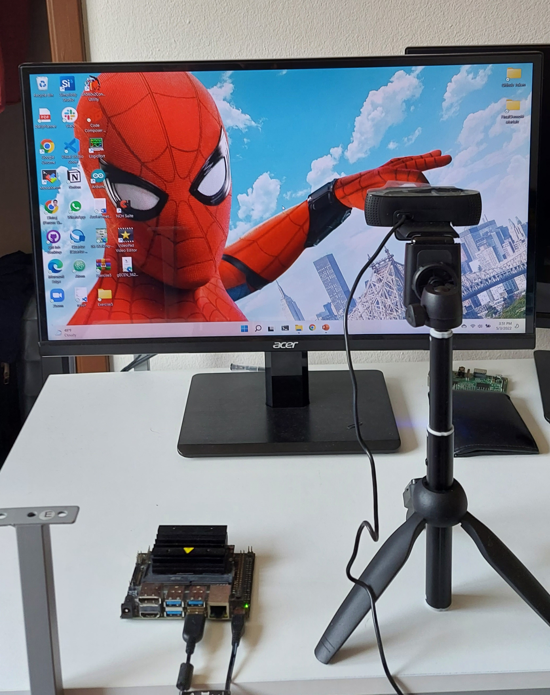
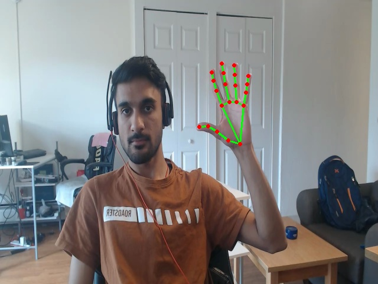
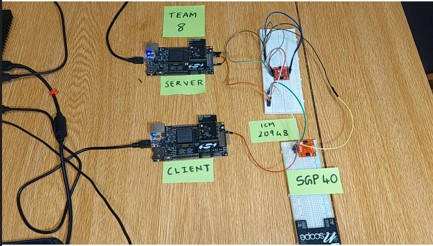
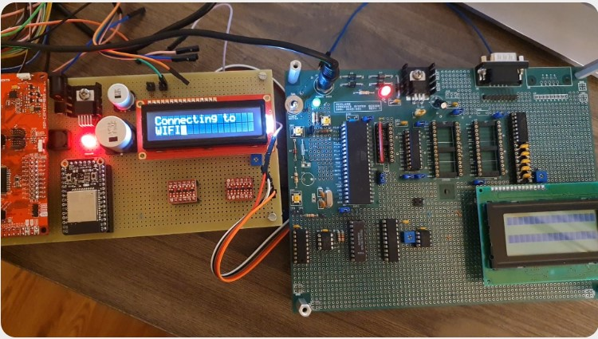
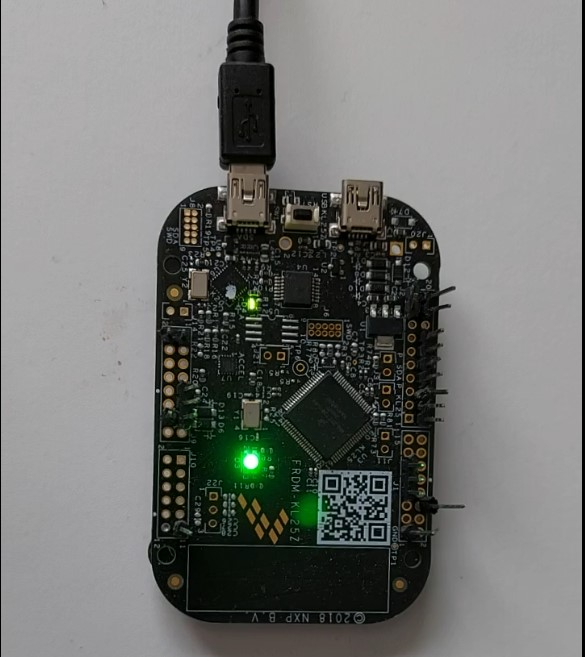
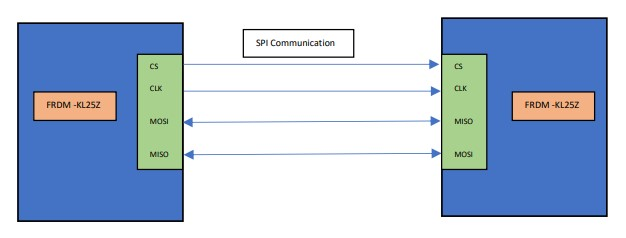

Dhiraj Bennadi
I build application-layer firmware in C, backed by HAL designs that keep it portable across hardware. My background spans IoT systems end-to-end, with prior work on electric vehicle charging stacks. Currently working in Med-Tech, shipping embedded software that has to be correct the first time.
Project Log

A real-time embedded system that captures and processes images at 10 Hz from a USB camera on a Linux-based Nvidia Jetson Nano.

A real-time system using the MediaPipe ML framework for interactive video overlay — gesture-driven zoom in/out, snapshot capture, and session close on a live feed.

Fitness Tracker
A client-server system using Bluetooth LE as the communication protocol, interfacing accelerometer, gyroscope, and air-quality sensors for activity tracking.

A system for remotely transferring and flashing binaries onto an 8051 over Wi‑Fi via an ESP32, implementing UART to access the bootloader directly.

Implementation of a scheduler, tasks, and priority mechanisms in FreeRTOS, handling interrupts for LED interfacing across two microcontroller boards.

Secure Communication on FRDM-KL25Z
Secure communication between two SPI ports using AES encryption, with a custom SPI driver and buffering scheme to prevent data loss in transit.
A Unix-terminal-style command processor built to parse and respond to valid user commands over a UART interface.
A project scaffold wiring up the Google Test framework through CMake inside VS Code for unit testing C++ components.
Custom Linux kernel modules for Raspberry Pi, including a character device driver, a GPIO driver, and a memory-mapped (mmap) driver built up from a baseline hello-world module.